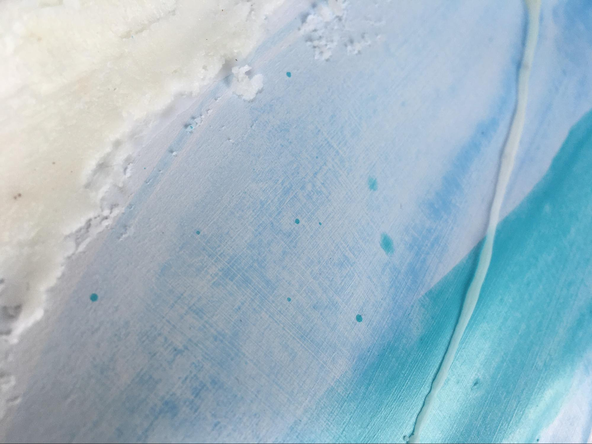
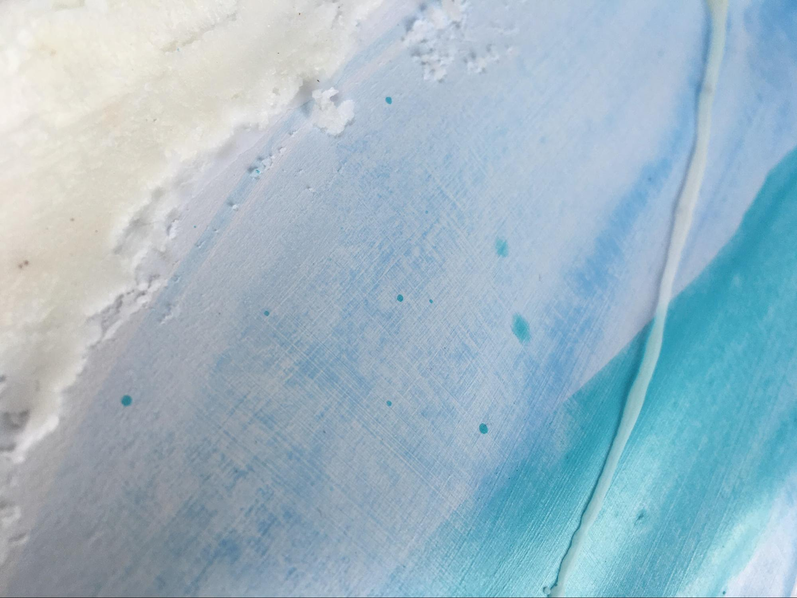
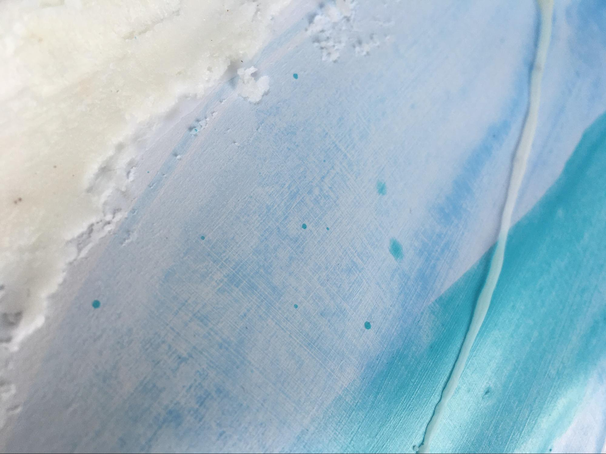

I hope you enjoy your journey through the wonderful world that is Katie. Here, you will explore a space that captures the essence of appreciating the small things in life. I hope to translate as best I can, how I see the world in all its soft, glowy, golden glory.
